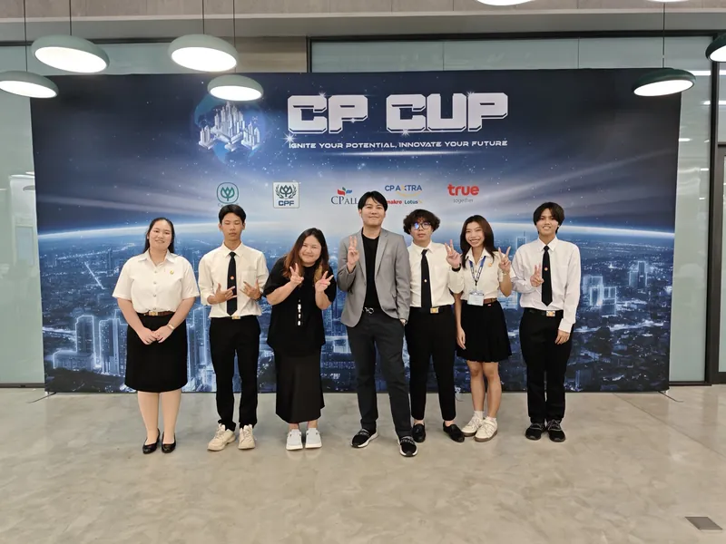
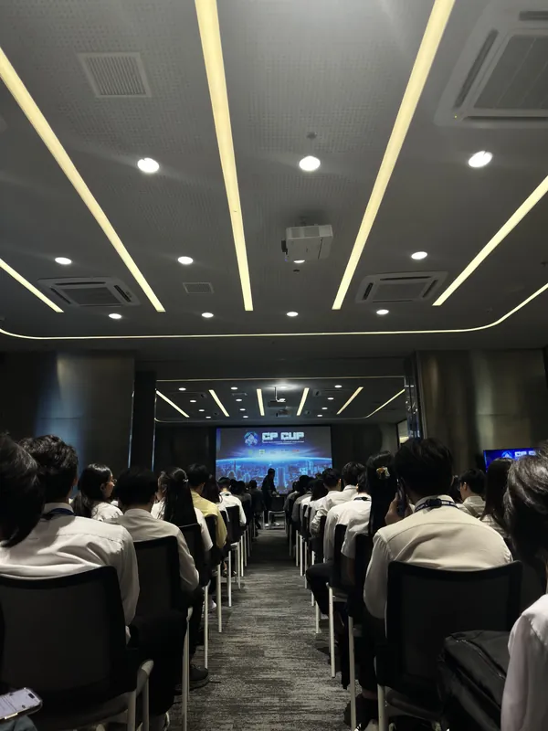

Project overview · CP CUP 2025 National Round · Concept & pitch
NutriMatch
แนวคิด AI Nutritionist สำหรับวางแผนอาหารเฉพาะบุคคล เน้นการวิเคราะห์ข้อมูลสุขภาพ โมเดลธุรกิจ Financial Model และการนำเสนอแนวคิด โดยไม่ได้พัฒนาเป็นซอฟต์แวร์

The idea
หน้าปกสไลด์สรุปแนวคิดไว้ว่า “AI-Driven Nutritional Prescription that connects medical data to real food choices” คือการนำข้อมูลทางการแพทย์ของผู้ใช้มาแปลงเป็นแผนโภชนาการเฉพาะบุคคล แล้วเชื่อมกับอาหารและวัตถุดิบจริงที่ซื้อได้ในเครือข่ายค้าปลีกของ CP (Makro, Lotus’s และ 7-Eleven) โครงการนี้เสนอเป็นแพลตฟอร์ม Personalized AI Nutritionist สำหรับ MorDee App (CPF)
สไลด์เปิดด้วยคำถามว่า “Have you ever tried to eat healthy… but didn’t know where to start?” และแจกแจงปัญหาสามข้อ คือความสับสนว่าสินค้าไหนเหมาะกับความต้องการทางการแพทย์ของตน ความเครียดจากการตัดสินใจเพราะกลัวซื้อผิดชิ้น และการรู้ว่าต้องลดอะไรแต่ไม่รู้ว่าจะเริ่มลงมืออย่างไร พร้อมยกข้อมูลโรคไม่ติดต่อเรื้อรัง (NCDs) ในประเทศไทยมาประกอบ
My role
ผมเป็น Data & Business Analyst ในทีม CoreLab (Digital Innovation Track) งานของผมในทีมคือวิเคราะห์ข้อมูลสุขภาพและโภชนาการ ออกแบบแนวทาง predictive AI พร้อม business proposal และ financial model
ทีมที่ปรากฏบนหน้าปกสไลด์ (Presented by CoreLab · คณะวิทยาศาสตร์และเทคโนโลยี มหาวิทยาลัยธรรมศาสตร์):
- Natkrita Songkran Team Leader
- Thanat Vijitrakanlikit
- Premch Phaosatheanthanon
- Nannasaporn Chaisurin
- Bawaonkit Pongmalee
Approach
แผนภาพ “How the System Works?” ในสไลด์แสดงลำดับตั้งแต่ข้อมูลทางการแพทย์ของผู้ใช้ไปจนถึงการสั่งวัตถุดิบ
Medical data
ผู้ใช้ให้ข้อมูลทางการแพทย์ของตน ซึ่งสไลด์ระบุว่าใช้ข้อมูลจริงจาก MorDee App (โรค ยา และโปรไฟล์ทางการแพทย์)
User medical dataGoal setting
ขั้นตอนตั้งเป้าหมาย (Goal Setting) ก่อนให้ AI ประมวลผล
Goal settingAI designs the meal
AI ประมวลผล แล้ว NutriMatch ออกแบบมื้ออาหารเฉพาะบุคคลให้ผู้ใช้
Personalized mealOrder
ไปที่แพลตฟอร์ม Makro, Lotus’s หรือ 7-Eleven เพื่อสั่งวัตถุดิบ
Ready-to-cook
ความได้เปรียบที่สไลด์ระบุ ได้แก่ การเข้าถึงนักโภชนาการและนักกำหนดอาหารที่ได้รับการรับรอง การเก็บข้อมูลสุขภาพของผู้ป่วยไว้ในแอปอย่างปลอดภัย และการเข้าถึงเครือข่ายค้าปลีก 7-Eleven, Makro และ Lotus’s
ด้านธุรกิจ สไลด์เสนอโมเดล B2B2C ที่เชื่อมข้อมูลสุขภาพของ MorDee App เข้ากับสินค้าของ CPF ช่องทางค้าปลีก และโครงสร้างการจัดส่งถึงบ้าน พร้อมแผนดำเนินงานสี่ไตรมาส ตั้งแต่วิจัยและออกแบบ พัฒนาฟีเจอร์และโมเดล AI ปรับแต่งและเชื่อมต่อระบบ ไปจนถึงทดสอบและใช้งานจริง
สไลด์มีส่วน Business Impact ซึ่งเป็นการประมาณการทางธุรกิจ ไม่ใช่ผลจากระบบที่ใช้งานจริง จึงไม่นำตัวเลขมาแสดงในหน้านี้
Why it stayed a concept
ขอบเขตงานของทีมคือข้อเสนอทางธุรกิจและการนำเสนอ: วิเคราะห์ข้อมูล ออกแบบแนวทาง AI จัดทำโมเดลธุรกิจและ financial model แล้วนำเสนอในรอบ National Round ของ CP CUP 2025 สิ่งที่สไลด์วางไว้สำหรับการสร้างจริงคือแผนดำเนินงานสี่ไตรมาสข้างต้น ซึ่งยังไม่ได้ดำเนินการในโครงการนี้
NutriMatch ไม่ได้พัฒนาเป็นซอฟต์แวร์ จึงไม่มีโมเดลที่ฝึกแล้ว ผลการทดสอบ หรือข้อมูลผู้ใช้จริงให้รายงาน
Deck & evidence

